먼저 보는 요약
- 실적: 3년 연속 매출·이익이 30% 안팎 늘어난 고마진 회사입니다1
- 밸류에이션: 성장 프리미엄이 붙어 있어 싸다고 보기 어렵습니다123
- 주가: 상장 첫날 급등 뒤 공모가 아래까지 내려왔습니다2107
- 증권가: 정식 리포트와 컨센서스가 아직 없습니다11
- 공시로 본 핵심: DART 공시 자료가 없어 공시 기반 분석을 하지 못했습니다2
- 신규 상장 종목으로 입력된 DART 공시가 없어 사업보고서·계약 본문 검증은 생략합니다2
- 체크포인트: 생산능력·소송·오버행·순이익 급감 원인을 확인해야 합니다141381
- 재무FnGuide 재무제표 (연간·분기, 개별기업 분석 엑셀)
- 기본KRX·KIND 상장법인 정보 (시장·업종·시가총액)
- 퀀트동종업종 비교 (KIND 업종 + 자체 퀀트 리포트)
- 뉴스2026-09-15넘버스 · 엠에스바이오, 이익률 36% 앞세워 코스닥 출사표…272억 조달
- 뉴스2026-10-22전자신문 · [ET특징주] 코스닥 입성한 엠에스바이오, 주가 126%↑
- 뉴스2026-10-22서울경제 · 엠에스바이오, 상장일 74% 상승…시초가 대비 -15% [이런국장 저런주식]
- 뉴스2026-10-07뉴스핌 · 엠에스바이오, 공모가 7800원 확정
- 뉴스2026-04-21뉴스톱 · 엠에스바이오 FI, 5개월 만에 ‘초고속’ 엑시트 가시권
- 뉴스2026-10-08뉴스톱 · 공모가 확정한 엠에스바이오…FI, 투자 1년 만에 성과 ‘가시권’
- 뉴스2026-10-22연합뉴스 · [특징주] 엠에스바이오, 코스닥 입성 첫날 공모가 대비 70%↑(종합)
- 재무FnGuide 컨센서스 추정치
- 뉴스2026-09-28뷰어스 · [애널픽] 코스닥 앞둔 '엠에스바이오'..."재생의료 고수익 주목할만"
- 뉴스2026-09-15넘버스 · 엠에스바이오 IPO의 뇌관…밸류 착시ㆍ소송 등 '도마 위'
- 뉴스2026-10-08넘버스 · 엠에스바이오, 코스닥 출사표…해외 진출 청사진 속 생산능력 '숙제'
- 공시DART 사업보고서 '배당에 관한 사항' (분리과세 요건 추정)
배당소득 분리과세 (고배당기업)
판단 불가추정
DART 고유번호가 없어 확인하지 못했습니다.
제도 요약
- 근거: 조세특례제한법 제104조의27 (고배당기업 배당소득 과세특례), 코스피·코스닥 상장사 대상
- 요건: 2024 사업연도보다 배당이 줄지 않고, 배당성향 40% 이상 또는 배당성향 25% 이상 + 전년 대비 배당 10% 이상 증가
- 2026년 1월 1일 이후 지급 배당부터 2028년까지 한시 적용 (안내 자료 기준)
- 해당 기업 배당은 다른 금융소득과 합산하지 않고 아래 세율로 따로 과세할 수 있습니다. ETF 분배금은 대상이 아닙니다.
| 분리과세 대상 배당소득 | 세율 |
|---|---|
| 2천만원 이하 | 14% |
| 2천만원 초과 ~ 3억원 이하 | 20% |
| 3억원 초과 ~ 50억원 이하 | 25% |
| 50억원 초과 | 30% |
사업 구조
무엇으로 돈을 버는 회사인가?
인체조직 이식재와 생체재료 기반 의료기기를 만드는 재생의료 회사이며, 양막렌즈·ECM 스킨부스터로 영역을 넓히고 있습니다.
- 핵심은 인체조직 이식재와 생체재료 의료기기입니다2
- 신사업은 ECM 스킨부스터와 안과용 양막렌즈입니다56
- 매출총이익률 66%대로 소재형 사업의 높은 마진 구조입니다1
- ECM 스킨부스터는 경쟁이 빠르게 늘어나는 시장입니다812
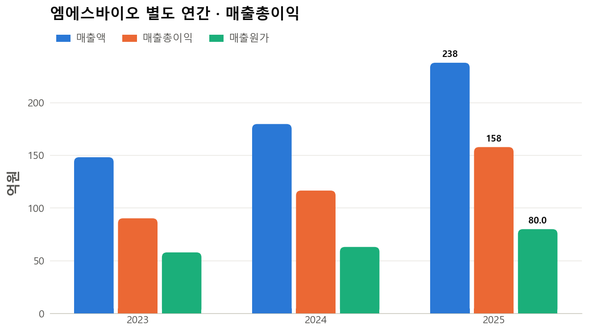
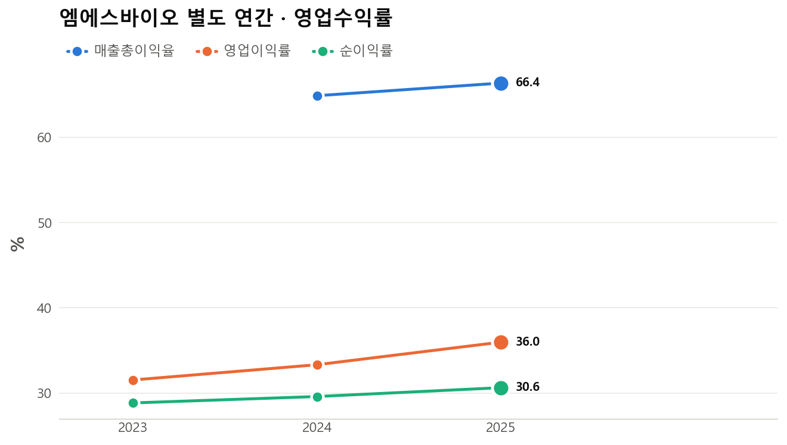
- 재무FnGuide 재무제표 (연간·분기, 개별기업 분석 엑셀)
- 기본KRX·KIND 상장법인 정보 (시장·업종·시가총액)
- 뉴스2026-10-01MEDI:GATE NEWS · 유방재건·골재생 넘어 양막렌즈까지…엠에스바이오 "IPO는 성장의 시작 아닌 가속"
- 뉴스2026-09-21머니투데이 · 엠에스바이오 대표 "원료·제품 전과정 내재화…재생의료 이끌 것" - 머니투데이
- 뉴스2026-09-13머니투데이 · 엠에스바이오, 2174억 IPO 공모 돌입…"생체소재에 스킨부스터 추가" - 머니투데이
- 뉴스2026-09-29더스탁(The Stock) · 엠에스바이오, 안과용 ‘AM Lens’ 싱가포르 진출
- 뉴스2026-10-01서울경제 · 엠에스바이오 “조직은행 인수해 美 두번째 비봉합 양막렌즈 기업될 것”
- 뉴스2026-04-14아시아투데이 · 제약바이오, ECM 스킨부스터 경쟁 격화…결국 ‘원료 싸움’
- 뉴스2026-03-25뉴스1 · GC녹십자웰빙, 인체조직 기반 스킨부스터 '지셀르 리본느' 출시
- 뉴스2025-11-16팜이데일리 · ECM 스킨부스터 시장 확장 국면…바이오비쥬도 참전
- 뉴스2026-05-08중앙일보 · 50만원인데 품절?…인체조직 논란에도 불티 난다는 피부주사
- 뉴스2026-03-25서울경제 · ‘요즘 대세’ ECM 스킨부스터 진출에... GC녹십자웰빙 19% 급등 [Why 바이오]
- 뉴스2026-10-08넘버스 · 엠에스바이오, 코스닥 출사표…해외 진출 청사진 속 생산능력 '숙제'
실적 추세
실적은 어디로 가고 있나?
연간 실적은 3년 연속 고성장했지만, 2026년 6월 기준 순이익이 4.9억으로 급감한 점이 가장 큰 물음표입니다.
- 2025년은 매출 32%·영업이익 43% 늘어난 최고 실적이었습니다1
- 2026년 6월 기준 영업이익률은 37.8%로 더 올랐습니다1
- 그러나 순이익은 4.9억으로 영업이익의 17%에 그쳤습니다1
- 회사는 2028년 매출 683억을 목표로 제시했다고 보도됐습니다3
| 항목 | 2024 | 2025 | 2026.06 | 출처 |
|---|---|---|---|---|
| 매출액(억원) | 179.7 | 237.9 | 78.5 | 공식1 |
| 영업이익(억원) | 59.9 | 85.6 | 29.6 | 공식1 |
| 당기순이익(억원) | 53.2 | 72.9 | 4.9 | 공식1 |
| 영업이익률(%) | 33.3 | 36.0 | 37.8 | 공식1 |
| 순이익률(%) | 29.6 | 30.6 | 6.2 | 공식1 |
- 재무FnGuide 재무제표 (연간·분기, 개별기업 분석 엑셀)
- 퀀트자체 퀀트 전략 리포트 순위 (Quant_report 20261104)
- 뉴스2026-10-01www.ebn.co.kr · [바이오현장] '흑자 성장' 엠에스바이오, IPO 출격…'2028년 매출 683억' 정조준
- 뉴스2026-10-13녹색경제신문 · [공모주 SWOT] 엠에스바이오 피어그룹 녹십자웰빙·메디톡스, 사업 유사성보다 수익성?
- 재무FnGuide 컨센서스 추정치
이익의 질·현금흐름
이익의 질과 현금흐름은 믿을 만한가?
2025년까지 영업현금흐름이 순이익에 근접해 이익의 질은 좋았으나, 2026년의 영업외 손실이 그 신뢰를 흔듭니다.
- 2025 영업현금흐름 71.1억은 순이익 72.9억의 97%입니다1
- 2025년 재무활동으로 234.5억이 들어와 현금이 176.4억으로 늘었습니다1
- ROE 29.0%, ROIC 44.1%로 자본 효율은 높습니다1
- 퀀트의 현금창출능력 순위는 상위 98.1%로 최하위권입니다3
- 재무FnGuide 재무제표 (연간·분기, 개별기업 분석 엑셀)
- 뉴스2026-04-21뉴스톱 · 엠에스바이오 FI, 5개월 만에 ‘초고속’ 엑시트 가시권
- 퀀트자체 퀀트 전략 리포트 순위 (Quant_report 20261104)
재무 안전성
재무는 안전한가?
부채비율 3.84%에 공모자금 272억이 더해져 재무 위험은 거의 없습니다. 돈이 모자란 회사가 아니라 돈을 어디에 쓸지가 문제입니다.
- 2026년 6월 부채총계 22.2억, 자본 580억으로 사실상 무차입입니다1
- 공모로 272억을 더 조달해 현금은 400억대로 추정됩니다41
- 자본금 19.4억에 유보율 2,378%로 이익잉여금이 두텁습니다1
| 항목 | 2024 | 2025 | 2026.06 | 출처 |
|---|---|---|---|---|
| 자산총계(억원) | 237.3 | 563.5 | 602.3 | 공식1 |
| 부채총계(억원) | 24.9 | 273.5 | 22.2 | 공식1 |
| 자본총계(억원) | 212.5 | 290.0 | 580.0 | 공식1 |
| 부채비율(%) | 11.7 | 94.3 | 3.84 | 공식1 |
| 발행주식수(천주) | 3,885 | 3,885 | 23,080 | 공식1 |
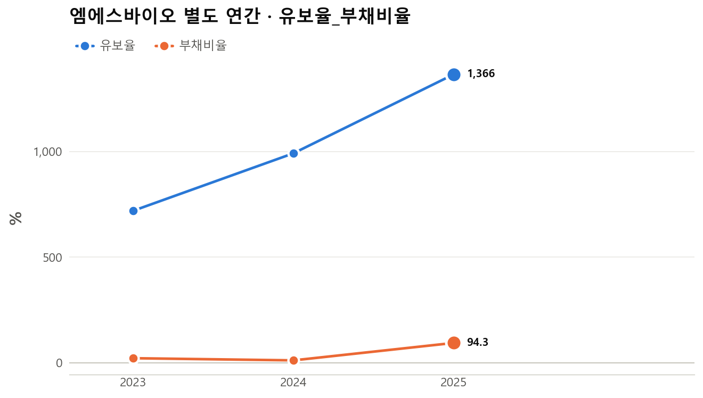
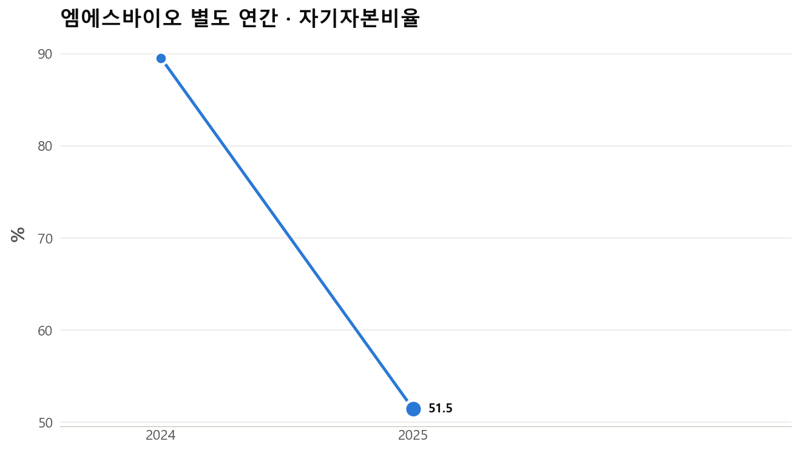
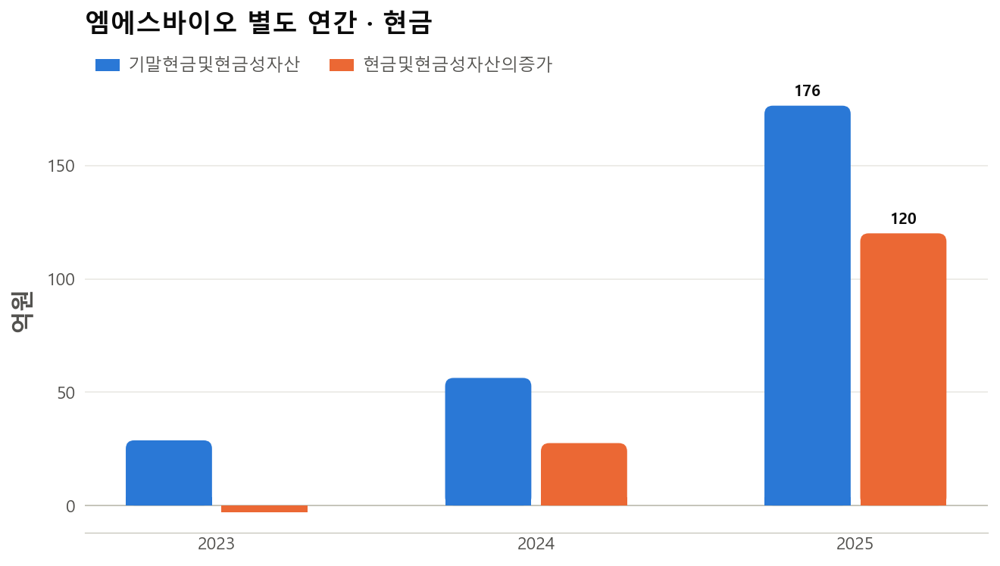
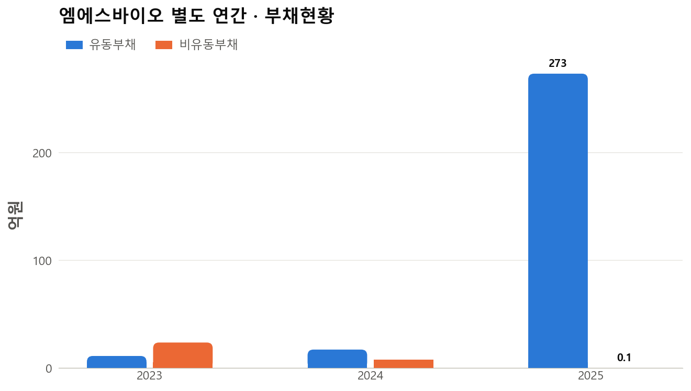
- 재무FnGuide 재무제표 (연간·분기, 개별기업 분석 엑셀)
- 퀀트자체 퀀트 전략 리포트 순위 (Quant_report 20261104)
- 재무FnGuide 컨센서스 추정치
- 뉴스2026-09-15넘버스 · 엠에스바이오, 이익률 36% 앞세워 코스닥 출사표…272억 조달
- 뉴스2026-09-08뉴스토마토 · [IB토마토](IPO인사이트)엠에스바이오, 312억 공모 승부…생산능력 두 배로
- 뉴스2026-09-15넘버스 · 엠에스바이오 IPO의 뇌관…밸류 착시ㆍ소송 등 '도마 위'
주가 수준
지금 주가는 비싼가 싼가?
S-RIM과 동종업 PER 기준으로는 비싸고, 공모가·현금 보정 PBR 기준으로는 거품이 빠진 자리입니다. 성장 지속이 입증돼야 정당화되는 가격입니다.
- S-RIM 적정시총 1,051억 대비 시총 1,716억은 63% 높습니다(추정)21
- 추정 PER 23.5배는 동종 흑자 기업보다 높습니다123
- PBR 2.96배는 공모자금 반영 시 약 2.0배로 낮아집니다(추정)14
- 공모가·장외 평가와 비교하면 가격 기대는 많이 낮아졐습니다571
- 배당은 없고 분리과세 판정도 할 수 없습니다29
| 지표 | 엠에스바이오 | 클래시스 | 원텍 | 인바디 | 출처 |
|---|---|---|---|---|---|
| PER(배) | 23.5(추정) | 12.62 | 8.32 | 13.39 | 123 |
| PBR(배) | 2.96 | 3.06 | 1.92 | 1.80 | 13 |
| PSR(배) | 7.2(추정) | 4.6 | 1.99 | 2.36 | 123 |
| 영업이익률(%) | 36.0(2025) | 46.1 | 25.12 | 18.74 | 23 |
| ROE(%) | 29.0(2025) | 25.05 | 23.11 | 13.53 | 23 |
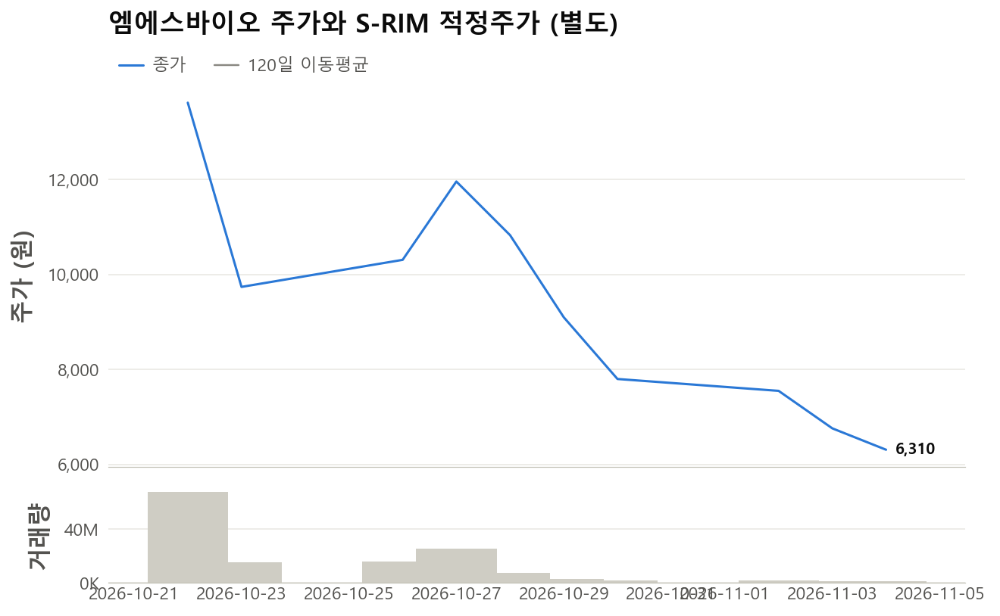
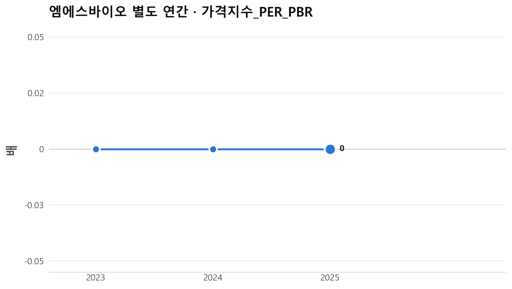
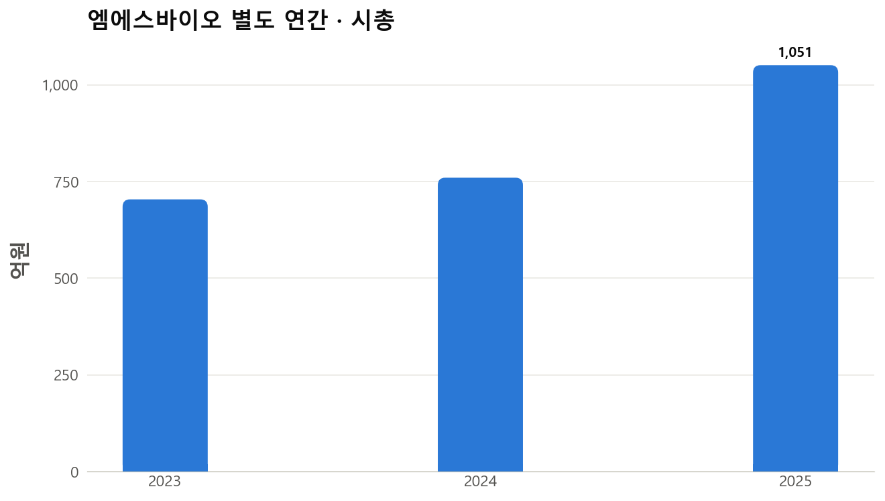
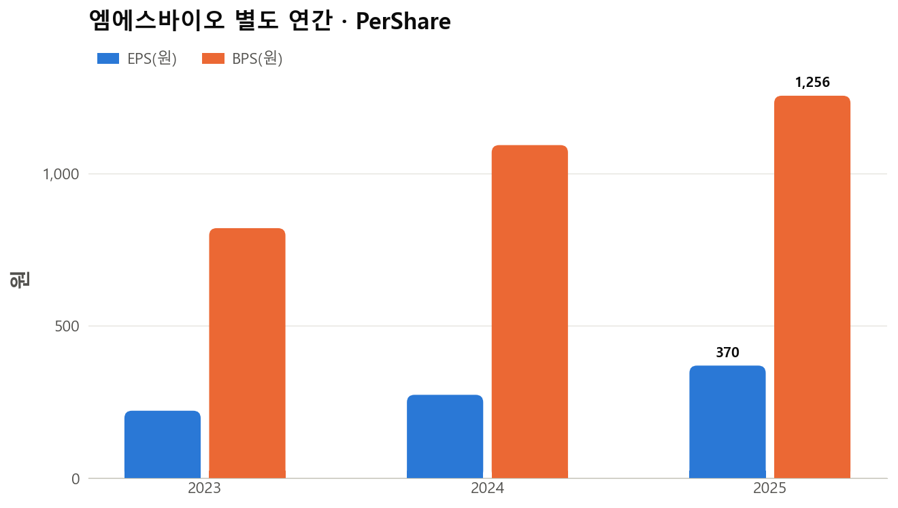
- 기본KRX·KIND 상장법인 정보 (시장·업종·시가총액)
- 재무FnGuide 재무제표 (연간·분기, 개별기업 분석 엑셀)
- 퀀트동종업종 비교 (KIND 업종 + 자체 퀀트 리포트)
- 뉴스2026-09-15넘버스 · 엠에스바이오, 이익률 36% 앞세워 코스닥 출사표…272억 조달
- 뉴스2026-10-07뉴스핌 · 엠에스바이오, 공모가 7800원 확정
- 뉴스2026-10-07서울경제 · 엠에스바이오 IPO 공모가 상단 확정…시총 2100억 [시그널]
- 뉴스2026-04-27머니투데이 · 엠에스바이오, 생체소재로 장외서 1500억 평가…코스닥 도전 - 머니투데이
- 뉴스2026-08-06Chosunbiz · 상반기 제약바이오 IPO 8곳 모두 공모가 하회...하반기 상장도 ‘빨간불’
- 공시DART 사업보고서 '배당에 관한 사항' (분리과세 요건 추정)
- 재무FnGuide 컨센서스 추정치
퀀트 지표
퀀트 지표로 본 위치는?
재무 안정성·영업이익률은 최상위권이지만, 가치·마법공식 지표는 신규 상장 자료 공백과 순이익 급감 탓에 최하위권입니다.
| 지표 | 값 | 순위/대상 | 상위 % |
|---|---|---|---|
| 자기자본비율 | 96.31 | 59.5/2,498 | 2.4 |
| 영업이익률 | 37.75 | 75/1,522 | 4.9 |
| 유보율 | 2,378 | 619/2,393 | 25.9 |
| 순이익률 | 6.24 | 966/1,544 | 62.6 |
| Value | 1,037 | 1,572/1,598 | 98.4 |
| Magic | 3,709 | 1,583/1,599 | 99.0 |
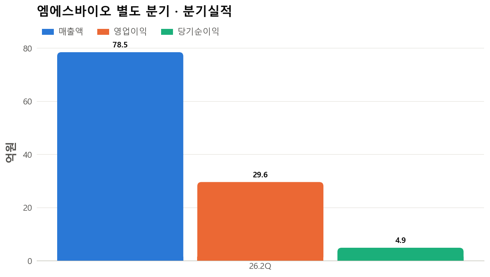
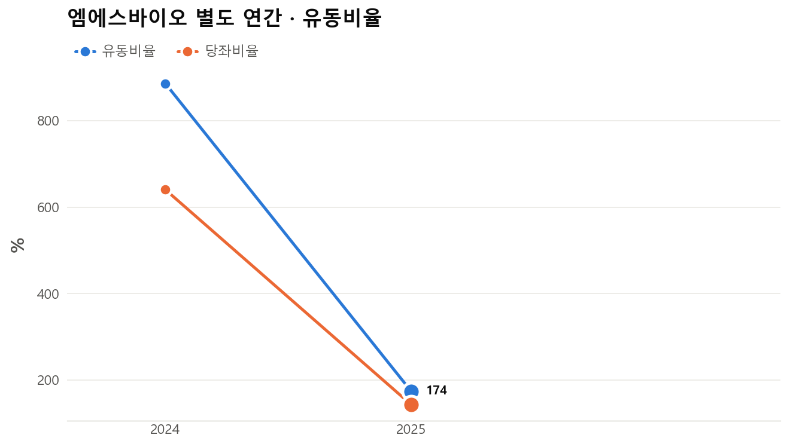
- 퀀트자체 퀀트 전략 리포트 순위 (Quant_report 20261104)
- 재무FnGuide 재무제표 (연간·분기, 개별기업 분석 엑셀)
- 기본KRX·KIND 상장법인 정보 (시장·업종·시가총액)
- 시세네이버 증권 일별 시세
지난 1년
지난 1년 무슨 일이 있었나?
예심 통과→공모가 상단 확정→상장 첫날 급등→2주 만에 공모가 하회로 이어진 전형적인 IPO 과열·냉각 경로였습니다.
- 7월 예심 통과 후 9월 증권신고서, 10월 공모가 상단 7,800원으로 확정됐습니다135
- 상장 첫날 '따블'을 터치했지만 시초가 대비로는 15% 밀렸습니다711
- FI의 빠른 엑시트와 밸류 착시·소송이 상장 전부터 지적됐습니다1315
- ECM 스킨부스터 시장이 커지며 경쟁사 진입이 잇따랐습니다1619
- 뉴스2026-07-10뉴스핌 · 엠에스바이오·네오사피엔스, 코스닥 예심 통과
- 뉴스2026-07-10연합뉴스 · 엠에스바이오·네오사피엔스, 코스닥 상장예심 통과
- 뉴스2026-09-08아시아경제 · 엠에스바이오, 증권신고서 제출…10월 코스닥 상장 추진
- 뉴스2026-09-15넘버스 · 엠에스바이오, 이익률 36% 앞세워 코스닥 출사표…272억 조달
- 뉴스2026-10-07뉴스핌 · 엠에스바이오, 공모가 7800원 확정
- 뉴스2026-10-07서울경제 · 엠에스바이오 IPO 공모가 상단 확정…시총 2100억 [시그널]
- 뉴스2026-10-22연합뉴스 · [특징주] 엠에스바이오, 코스닥 입성 첫날 개장 직후 '따블'
- 뉴스2026-10-22전자신문 · [ET특징주] 코스닥 입성한 엠에스바이오, 주가 126%↑
- 뉴스2026-10-22연합뉴스 · [특징주] 엠에스바이오, 코스닥 입성 첫날 공모가 대비 70%↑(종합)
- 뉴스2026-10-22한국경제 · 엠에스바이오, 코스닥 상장 첫날 89% 급등
- 뉴스2026-10-22서울경제 · 엠에스바이오, 상장일 74% 상승…시초가 대비 -15% [이런국장 저런주식]
- 기본KRX·KIND 상장법인 정보 (시장·업종·시가총액)
- 뉴스2026-04-21뉴스톱 · 엠에스바이오 FI, 5개월 만에 ‘초고속’ 엑시트 가시권
- 뉴스2026-10-08뉴스톱 · 공모가 확정한 엠에스바이오…FI, 투자 1년 만에 성과 ‘가시권’
- 뉴스2026-09-15넘버스 · 엠에스바이오 IPO의 뇌관…밸류 착시ㆍ소송 등 '도마 위'
- 뉴스2026-03-25서울경제 · ‘요즘 대세’ ECM 스킨부스터 진출에... GC녹십자웰빙 19% 급등 [Why 바이오]
- 뉴스2026-08-15비즈워치 · 사람 피부 스킨부스터 시장 커진다…관련 기업 실적 '껑충'
- 뉴스2026-06-16팜이데일리 · 우후죽순 ECM 스킨부스터, 옥석 가릴 포인트 두 가지는?
- 뉴스2026-04-14아시아투데이 · 제약바이오, ECM 스킨부스터 경쟁 격화…결국 ‘원료 싸움’
증권가 시각
증권가는 어떻게 보나?
정식 증권사 리포트·컨센서스·선진짱 채널 자료가 모두 없습니다. 상장 전 '고수익 재생의료' 기대 보도만 있습니다.
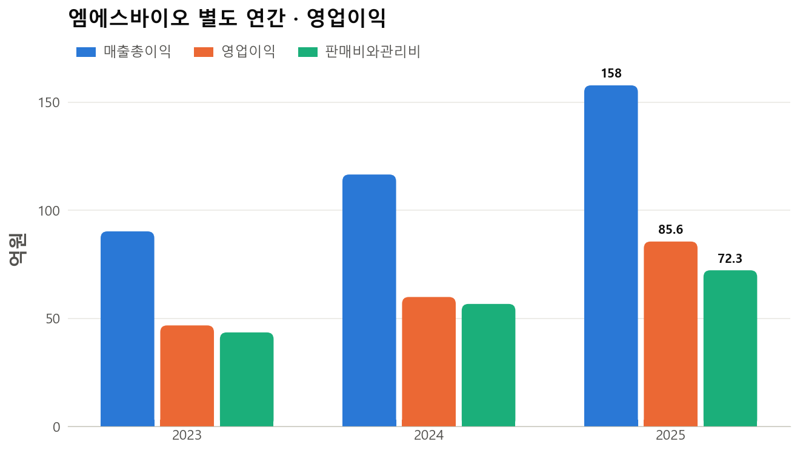
- 증권사 커버리지가 시작되면 목표주가·추정치가 주가에 새 변수가 됩니다1
- 재무FnGuide 컨센서스 추정치
- 뉴스2026-09-28뷰어스 · [애널픽] 코스닥 앞둔 '엠에스바이오'..."재생의료 고수익 주목할만"
- 뉴스2026-09-15넘버스 · 엠에스바이오, 이익률 36% 앞세워 코스닥 출사표…272억 조달
- 뉴스2026-10-13녹색경제신문 · [공모주 SWOT] 엠에스바이오 피어그룹 녹십자웰빙·메디톡스, 사업 유사성보다 수익성?
- 뉴스2026-10-01www.ebn.co.kr · [바이오현장] '흑자 성장' 엠에스바이오, IPO 출격…'2028년 매출 683억' 정조준
앞으로 볼 것
앞으로 무엇을 확인해야 하나?
첫 분기보고서에서 순이익 급감 원인과 2026년 성장률을 확인하는 것이 최우선입니다. 그다음이 증설·해외 진출 진척과 FI 물량입니다.
- 상장 후 첫 정기보고서에서 영업외 손실 성격을 봐야 합니다1
- 2028년 매출 683억 목표의 첫 관문은 2026년 성장률입니다21
- 해외 진출과 신제품은 양막렌즈·스킨부스터가 핵심입니다568
- FI 엑시트 물량과 소송은 주가의 수급·심리 변수입니다911
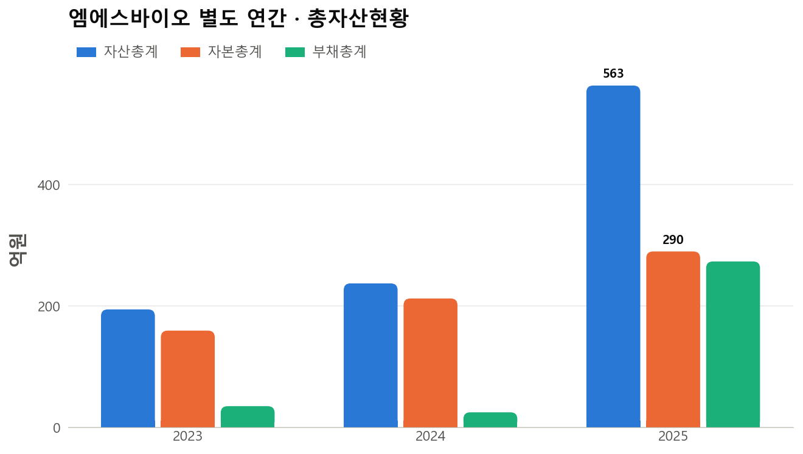
- 재무FnGuide 재무제표 (연간·분기, 개별기업 분석 엑셀)
- 뉴스2026-10-01www.ebn.co.kr · [바이오현장] '흑자 성장' 엠에스바이오, IPO 출격…'2028년 매출 683억' 정조준
- 뉴스2026-09-08뉴스토마토 · [IB토마토](IPO인사이트)엠에스바이오, 312억 공모 승부…생산능력 두 배로
- 뉴스2026-10-08넘버스 · 엠에스바이오, 코스닥 출사표…해외 진출 청사진 속 생산능력 '숙제'
- 뉴스2026-09-29더스탁(The Stock) · 엠에스바이오, 안과용 ‘AM Lens’ 싱가포르 진출
- 뉴스2026-10-01서울경제 · 엠에스바이오 “조직은행 인수해 美 두번째 비봉합 양막렌즈 기업될 것”
- 뉴스2026-04-14아시아투데이 · 제약바이오, ECM 스킨부스터 경쟁 격화…결국 ‘원료 싸움’
- 뉴스2026-09-13머니투데이 · 엠에스바이오, 2174억 IPO 공모 돌입…"생체소재에 스킨부스터 추가" - 머니투데이
- 뉴스2026-04-21뉴스톱 · 엠에스바이오 FI, 5개월 만에 ‘초고속’ 엑시트 가시권
- 뉴스2026-10-08뉴스톱 · 공모가 확정한 엠에스바이오…FI, 투자 1년 만에 성과 ‘가시권’
- 뉴스2026-09-15넘버스 · 엠에스바이오 IPO의 뇌관…밸류 착시ㆍ소송 등 '도마 위'
- 기본KRX·KIND 상장법인 정보 (시장·업종·시가총액)
강세 논리 vs 약세 논리
▲ 강세
- 재무FnGuide 재무제표 (연간·분기, 개별기업 분석 엑셀)
- 퀀트자체 퀀트 전략 리포트 순위 (Quant_report 20261104)
- 기본KRX·KIND 상장법인 정보 (시장·업종·시가총액)
- 뉴스2026-09-15넘버스 · 엠에스바이오, 이익률 36% 앞세워 코스닥 출사표…272억 조달
- 뉴스2026-09-08뉴스토마토 · [IB토마토](IPO인사이트)엠에스바이오, 312억 공모 승부…생산능력 두 배로
- 뉴스2026-10-01서울경제 · 엠에스바이오 “조직은행 인수해 美 두번째 비봉합 양막렌즈 기업될 것”
- 뉴스2026-10-07뉴스핌 · 엠에스바이오, 공모가 7800원 확정
- 퀀트동종업종 비교 (KIND 업종 + 자체 퀀트 리포트)
- 뉴스2026-04-27머니투데이 · 엠에스바이오, 생체소재로 장외서 1500억 평가…코스닥 도전 - 머니투데이
- 재무FnGuide 컨센서스 추정치
- 뉴스2026-04-21뉴스톱 · 엠에스바이오 FI, 5개월 만에 ‘초고속’ 엑시트 가시권
- 뉴스2026-09-15넘버스 · 엠에스바이오 IPO의 뇌관…밸류 착시ㆍ소송 등 '도마 위'
- 뉴스2026-03-25서울경제 · ‘요즘 대세’ ECM 스킨부스터 진출에... GC녹십자웰빙 19% 급등 [Why 바이오]
- 뉴스2026-04-14아시아투데이 · 제약바이오, ECM 스킨부스터 경쟁 격화…결국 ‘원료 싸움’
- 뉴스2026-08-06Chosunbiz · 상반기 제약바이오 IPO 8곳 모두 공모가 하회...하반기 상장도 ‘빨간불’
시나리오와 무효화 조건
| 시나리오 | 조건 | 의미 |
|---|---|---|
| 강세 | 순이익 급감이 일회성으로 확인되고 2026 매출이 30% 이상 늘어 300억대, 영업이익 100억대를 기록1 | 영업이익 110억(추정)에 현재 시총이면 영업이익 대비 15.6배로 낮아져 성장 프리미엄 재평가 여지가 생깁니다. 추정 근거는 2025 성장률 32%·영업이익률 36% 유지12 |
| 기본 | 2026 매출 20%대 성장, 영업이익률 35% 안팎 유지, 영업외 손실은 더 커지지 않음1 | 영업이익 100억 안팎(추정)으로 PER 20배 내외의 현재 가격이 유지되나, FI 물량 소화 전까지 공모가 7,800원 회복은 더딜 수 있습니다134 |
| 약세 | 2026.06 수치가 상반기 누적으로 확인돼 연매출이 2025에 못 미치고 영업외 손실이 반복1 | 연간 순이익이 2025 72.9억을 크게 밑돌면 PER이 수십 배로 치솟고 S-RIM 적정시총 1,051억(추정) 쪽으로 눌릴 수 있습니다12 |
이렇게 되면 판단을 바꿔야 합니다
- 첫 정기보고서에서 영업외 손실 24.7억(추정)이 반복 비용으로 드러나면 이익의 질 판단을 낮춰야 합니다1
- 2026.06 매출 78.5억이 2분기 단일로 확인되고 연환산 300억을 넘으면 성장 둔화 우려를 거둬야 합니다1
- 증설이 지연되거나 생산능력 부족으로 해외 매출이 늘지 않으면 2028년 683억 목표를 신뢰할 수 없습니다567
- 소송 금액이 자기자본 580억 대비 유의미하면 재무 안전 판단을 바꿔야 합니다81
- FI 물량이 출회돼 주가가 52주 최저 5,950원을 밑돌면 수급 판단을 다시 해야 합니다42
- 증권사 커버리지가 시작돼 추정치가 나오면 추정 PER 23.5배 판단을 선행 기준으로 바꿔야 합니다92
- ECM 스킨부스터 가격 경쟁으로 매출총이익률이 60% 아래로 떨어지면 고마진 논리를 수정해야 합니다110
앞으로 확인할 일정
- 상장 후 첫 분기보고서영업외 손실 원인, 2026.06 기간 구분(분기·반기), 2025말 유동부채 273.4억의 전환 내역1
- 2026년 하반기공모자금 272억의 사용 계획과 생산능력 두 배 증설 착수 여부116
- 보호예수 해제 시점(자료에 없음)FI 보유 물량 출회 규모412
- 수시AM Lens 싱가포르 매출 기여, 미국 조직은행 인수 진척1314
- 수시증권사 첫 리포트·FnGuide 컨센서스 생성 여부9
- 수시소송 진행 상황과 자기자본 대비 규모81
- 재무FnGuide 재무제표 (연간·분기, 개별기업 분석 엑셀)
- 기본KRX·KIND 상장법인 정보 (시장·업종·시가총액)
- 뉴스2026-10-07뉴스핌 · 엠에스바이오, 공모가 7800원 확정
- 뉴스2026-04-21뉴스톱 · 엠에스바이오 FI, 5개월 만에 ‘초고속’ 엑시트 가시권
- 뉴스2026-10-08넘버스 · 엠에스바이오, 코스닥 출사표…해외 진출 청사진 속 생산능력 '숙제'
- 뉴스2026-09-08뉴스토마토 · [IB토마토](IPO인사이트)엠에스바이오, 312억 공모 승부…생산능력 두 배로
- 뉴스2026-10-01www.ebn.co.kr · [바이오현장] '흑자 성장' 엠에스바이오, IPO 출격…'2028년 매출 683억' 정조준
- 뉴스2026-09-15넘버스 · 엠에스바이오 IPO의 뇌관…밸류 착시ㆍ소송 등 '도마 위'
- 재무FnGuide 컨센서스 추정치
- 뉴스2026-04-14아시아투데이 · 제약바이오, ECM 스킨부스터 경쟁 격화…결국 ‘원료 싸움’
- 뉴스2026-09-15넘버스 · 엠에스바이오, 이익률 36% 앞세워 코스닥 출사표…272억 조달
- 뉴스2026-10-08뉴스톱 · 공모가 확정한 엠에스바이오…FI, 투자 1년 만에 성과 ‘가시권’
- 뉴스2026-09-29더스탁(The Stock) · 엠에스바이오, 안과용 ‘AM Lens’ 싱가포르 진출
- 뉴스2026-10-01서울경제 · 엠에스바이오 “조직은행 인수해 美 두번째 비봉합 양막렌즈 기업될 것”
지난 1년 주요 뉴스
- 2026-04-21FI, 5개월 만에 초고속 엑시트 가시권 보도
2025년 투자한 FI의 조기 매도 가능성이 상장 후 오버행 변수로 처음 거론됐습니다1 - 2026-04-27장외서 1,500억 평가받으며 코스닥 도전
현재 시총 1,716억은 장외 평가보다 14% 높아(추정) 상장 전 기대 수준을 보여 줍니다23 - 2026-07-10코스닥 상장예비심사 통과
IPO 일정이 확정돼 공모 구조·밸류 논쟁이 시작됐습니다 - 2026-09-08증권신고서 제출, 312억 공모·생산능력 두 배 계획
공모자금의 핵심 용도가 증설임이 드러나 생산능력 숙제와 연결됩니다45 - 2026-09-15IPO 뇌관으로 밸류 착시·소송 지적
피어그룹 선정과 소송이 상장 후 할인 요인으로 남아 있습니다67 - 2026-09-29안과용 AM Lens 싱가포르 진출
해외 매출의 첫 사례로 양막렌즈 사업성이 검증되는 출발점입니다8 - 2026-10-01IPO 기자간담회, 2028년 매출 683억·미국 조직은행 인수 제시
2025 매출의 2.9배 목표로 연평균 42% 성장이 필요합니다(추정)910 - 2026-10-07공모가 상단 7,800원 확정, 시총 2,100억
현재 주가 6,310원은 공모가 대비 -19%, 공모 시총 대비 -18%입니다(추정)11123 - 2026-10-13공모주 SWOT: 피어그룹이 녹십자웰빙·메디톡스
사업 유사성보다 수익성 기준의 피어 선정이 밸류 착시 논란의 근거였습니다7 - 2026-10-22코스닥 상장 첫날 장중 126% 급등, 시초가 대비 -15% 마감
52주 최고 19,650원이 이날 형성돼 이후 68% 하락의 기준점이 됐습니다(추정)13143 - 2026-10-23상장 후 ECM사업 확대 보도
경쟁이 격화된 ECM 스킨부스터가 성장 축으로 공식화됐습니다1516 - 2026-08-06상반기 제약바이오 IPO 8곳 모두 공모가 하회
업종 IPO 투자심리가 약해 상장 후 공모가 하회가 업종 전반 현상입니다17
- 뉴스2026-04-21뉴스톱 · 엠에스바이오 FI, 5개월 만에 ‘초고속’ 엑시트 가시권
- 뉴스2026-04-27머니투데이 · 엠에스바이오, 생체소재로 장외서 1500억 평가…코스닥 도전 - 머니투데이
- 기본KRX·KIND 상장법인 정보 (시장·업종·시가총액)
- 뉴스2026-09-08뉴스토마토 · [IB토마토](IPO인사이트)엠에스바이오, 312억 공모 승부…생산능력 두 배로
- 뉴스2026-10-08넘버스 · 엠에스바이오, 코스닥 출사표…해외 진출 청사진 속 생산능력 '숙제'
- 뉴스2026-09-15넘버스 · 엠에스바이오 IPO의 뇌관…밸류 착시ㆍ소송 등 '도마 위'
- 뉴스2026-10-13녹색경제신문 · [공모주 SWOT] 엠에스바이오 피어그룹 녹십자웰빙·메디톡스, 사업 유사성보다 수익성?
- 뉴스2026-09-29더스탁(The Stock) · 엠에스바이오, 안과용 ‘AM Lens’ 싱가포르 진출
- 뉴스2026-10-01www.ebn.co.kr · [바이오현장] '흑자 성장' 엠에스바이오, IPO 출격…'2028년 매출 683억' 정조준
- 재무FnGuide 재무제표 (연간·분기, 개별기업 분석 엑셀)
- 뉴스2026-10-07뉴스핌 · 엠에스바이오, 공모가 7800원 확정
- 뉴스2026-10-07서울경제 · 엠에스바이오 IPO 공모가 상단 확정…시총 2100억 [시그널]
- 뉴스2026-10-22전자신문 · [ET특징주] 코스닥 입성한 엠에스바이오, 주가 126%↑
- 뉴스2026-10-22서울경제 · 엠에스바이오, 상장일 74% 상승…시초가 대비 -15% [이런국장 저런주식]
- 뉴스2026-10-23데일리메디 · 엠에스바이오, 코스닥 상장…ECM사업 확대
- 뉴스2026-04-14아시아투데이 · 제약바이오, ECM 스킨부스터 경쟁 격화…결국 ‘원료 싸움’
- 뉴스2026-08-06Chosunbiz · 상반기 제약바이오 IPO 8곳 모두 공모가 하회...하반기 상장도 ‘빨간불’
수집한 뉴스 전체 · 95건
지난 1년 주요 공시
공시 전체 · 0건 (DART)
| 날짜 | 공시 |
|---|
증권가 시각
한경컨센서스 리포트 전체 · 0건
| 날짜 | 증권사 | 리포트 | 목표주가 | 의견 |
|---|
선진짱 주식공부방 · 0건
선진짱 채널 '선진짱 주식공부방': 1년간 언급 7건 중 이 기업이 주제인 리포트성 메시지 0건 (PDF 0건 본문 분석)
표
컨센서스 추정치 (FnGuide)
| 연간 2023/12 | 연간 2024/12 | 연간 2025/12 | 연간 2026/12(E) | 연간 2026/09(E) | 분기 2025/06 | 분기 2025/09 | 분기 2025/12 | 분기 2026/03 | 분기 2026/06 | 분기 2026/09(E) | 분기 2026/12(E) | 분기 2027/03(E) | |
|---|---|---|---|---|---|---|---|---|---|---|---|---|---|
| 매출액 | |||||||||||||
| 영업이익 | |||||||||||||
| 영업이익(발표기준) | |||||||||||||
| 당기순이익 | |||||||||||||
| 당기순이익(지배) | |||||||||||||
| 당기순이익(비지배) | |||||||||||||
| 자산총계 | |||||||||||||
| 부채총계 | |||||||||||||
| 자본총계 | |||||||||||||
| 자본총계(지배) | |||||||||||||
| 자본총계(비지배) | |||||||||||||
| 자본금 | |||||||||||||
| 부채비율 | |||||||||||||
| 유보율 | |||||||||||||
| 영업이익률 | |||||||||||||
| 순이익률(지배) | |||||||||||||
| ROA | |||||||||||||
| ROE | |||||||||||||
| EPS | |||||||||||||
| BPS | |||||||||||||
| 현금DPS | 0 | 0 | 0 | 0 | 0 | 0 | 0 | 0 | |||||
| PER | |||||||||||||
| PBR | |||||||||||||
| 발행주식수(보통주) | 3,884,600 | 3,884,600 | 3,884,600 | 3,884,600 | 3,884,600 | 3,884,600 | 19,423,000 | 23,082,650 | |||||
| 현금배당수익률 |
동종업종 비교
| 본인 | 종목명 | 종목코드 | 업종 | 종가 | 시가총액 | PER | PBR | PSR | ROE | 영업이익률 | 매출증가_YOY | 영익증가_YOY | 부채비율 | 배당수익률 | S-RIM_주가 |
|---|---|---|---|---|---|---|---|---|---|---|---|---|---|---|---|
| 클래시스 | 214150 | 의료용 기기 제조업 | 26,000 | 16,961 | 12.62 | 3.06 | 4.6 | 25.05 | 46.1 | 26.7 | 2.2 | 39.57 | 3.85 | 26,645 | |
| 리브스메드 | 491000 | 의료용 기기 제조업 | 42,450 | 10,721 | -40.4 | 6.54 | 20.3 | -16.19 | -62.24 | 9.6 | 124.4 | 14.61 | 0 | -13,136 | |
| 씨어스 | 458870 | 의료용 기기 제조업 | 20,950 | 8,033 | 19.22 | 11.75 | 8.28 | 61.28 | 43.4 | 256.8 | 772.1 | 25.65 | 0 | 13,656 | |
| 큐리옥스바이오시스템즈 | 445680 | 의료용 기기 제조업 | 45,600 | 7,854 | -61.46 | 16.03 | 136.95 | -26.09 | -240.4 | 18.1 | 12.6 | 8.87 | 0 | -9,272 | |
| 에스디바이오센서 | 137310 | 의료용 기기 제조업 | 6,470 | 7,812 | -1.07 | 0.32 | 1.06 | -30.4 | -8.69 | 12 | -64.5 | 20.61 | 3.09 | -75,710 | |
| 인바디 | 041830 | 의료용 기기 제조업 | 46,250 | 6,235 | 13.39 | 1.8 | 2.36 | 13.53 | 18.74 | 30.4 | 70.7 | 12.09 | 1.3 | 43,471 | |
| 아이센스 | 099190 | 의료용 기기 제조업 | 16,220 | 4,797 | -116.6 | 1.32 | 1.47 | -0.8 | 3.08 | 15.5 | 293.1 | 64.61 | 0.62 | -1,231 | |
| 덴티움 | 145720 | 의료용 기기 제조업 | 39,650 | 3,419 | 11.45 | 0.57 | 0.98 | 5.05 | 19.72 | 8.6 | -5.5 | 65.96 | 1.51 | 43,523 | |
| 원텍 | 336570 | 의료용 기기 제조업 | 3,725 | 3,326 | 8.32 | 1.92 | 1.99 | 23.11 | 25.12 | 19.3 | -35.8 | 61.12 | 1.34 | 5,598 | |
| 뷰웍스 | 100120 | 의료용 기기 제조업 | 29,650 | 2,660 | 6.28 | 1.03 | 1.09 | 16.7 | 13.1 | 1.9 | 63.7 | 41.99 | 2.33 | 60,311 | |
| 바텍 | 043150 | 의료용 기기 제조업 | 16,790 | 2,494 | 4.42 | 0.46 | 0.57 | 10.71 | 13.44 | 9.7 | 45 | 38.25 | 1.79 | 48,422 | |
| 아스테라시스 | 450950 | 의료용 기기 제조업 | 4,895 | 1,842 | 30.27 | 4.07 | 4.65 | 13.46 | 8.31 | 8.6 | -97.9 | 12.9 | 1.06 | 2,023 | |
| 바이오다인 | 314930 | 의료용 기기 제조업 | 5,720 | 1,703 | -1,014 | 3.87 | 117.13 | -0.38 | -81.21 | -67.2 | -327.8 | 0.86 | 0 | -70 | |
| 나노엔텍 | 039860 | 의료용 기기 제조업 | 4,315 | 1,644 | 28.04 | 1.75 | 3.72 | 6.23 | 3.34 | 39.4 | 290.3 | 8.65 | 0 | 1,923 | |
| 인터로조 | 119610 | 의료용 기기 제조업 | 14,290 | 1,631 | 9.16 | 1.04 | 1.31 | 11.3 | 18.73 | -6 | -5.7 | 60.16 | 4.55 | 19,500 | |
| 메디아나 | 041920 | 의료용 기기 제조업 | 7,780 | 1,447 | 15.04 | 1.02 | 2.03 | 6.79 | 11.06 | 34.8 | 137.9 | 10.28 | 0 | 6,466 | |
| 코스모로보틱스 | 439960 | 의료용 기기 제조업 | 4,345 | 1,410 | -10.9 | 4.04 | 23.09 | -36.97 | -192.21 | -63.5 | 259.8 | 14.52 | 0 | -4,965 | |
| 엠아이텍 | 179290 | 의료용 기기 제조업 | 3,975 | 1,287 | 12.08 | 0.97 | 3.53 | 8.02 | 29.38 | 26.1 | 42.7 | 14.64 | 3.02 | 4,113 | |
| 레이언스 | 228850 | 의료용 기기 제조업 | 7,920 | 1,273 | 30.79 | 0.53 | 0.97 | 1.73 | 2.52 | 25.7 | -910.3 | 12.34 | 3.79 | 3,259 | |
| 엘앤케이바이오 | 156100 | 의료용 기기 제조업 | 5,690 | 1,272 | 59.83 | 2.25 | 3.18 | 4.34 | 0.35 | 3.7 | -25.9 | 93.95 | 0 | 1,371 |
퀀트 전략 순위 (상위 % 순)
| 구분 | 전략/지표 | 값 | 순위 | 순위대상 종목수 | 상위 % |
|---|---|---|---|---|---|
| 별도(sq) | 자기자본비율 | 96.31 | 59.5 | 2,498 | 2.4 |
| 별도(sq) | 영업이익률 | 37.75 | 75 | 1,522 | 4.9 |
| 별도(sq) | 유보율 | 2,378 | 619 | 2,393 | 25.9 |
| 별도(sq) | NCAV | 0.28 | 865.5 | 1,546 | 56 |
| 별도(sq) | 유동자산 | 496.89 | 1,524 | 2,497 | 61 |
| 별도(sq) | 순이익률 | 6.24 | 966 | 1,544 | 62.6 |
| 별도(sq) | 배당수익률 | 0 | 1,872 | 2,508 | 74.6 |
| 별도(sq) | 현금창출능력 | 0 | 1,666 | 1,697 | 98.1 |
| 별도(sq) | Value | 1,037 | 1,572 | 1,598 | 98.4 |
| 별도(sq) | Magic | 3,709 | 1,583 | 1,599 | 99 |
| 연결(lq) | 주도주 | 264 | |||
| 연결(lq) | Rule_of_40 | 746 | |||
| 연결(lq) | 영업이익률 | 1,340 | |||
| 연결(lq) | PEG | 722 | |||
| 연결(lq) | 배당수익률 | 2,096 | |||
| 연결(lq) | 매출증가_YOY | 1,460 | |||
| 연결(lq) | 영익증가_YOY | 1,020 | |||
| 연결(lq) | 순익증가_YOY | 919 | |||
| 연결(lq) | 매출증가_QOQ | 1,530 | |||
| 연결(lq) | 영익증가_QOQ | 1,047 | |||
| 연결(lq) | 순익증가_QOQ | 929 | |||
| 연결(lq) | Value | 1,289 | |||
| 연결(lq) | Magic | 1,304 | |||
| 연결(lq) | NCAV | 1,206 | |||
| 연결(lq) | SuperValue | 1,053 | |||
| 연결(lq) | VIP_Value | 1,053 | |||
| 연결(lq) | 자기자본비율 | 2,053 | |||
| 연결(lq) | 현금창출능력 | 1,418 | |||
| 연결(lq) | 지배주주순이익률 | 1,287 | |||
| 연결(lq) | 유동자산 | 2,052 | |||
| 연결(lq) | 기말현금및현금성자산 | 2,056 | |||
| 연결(lq) | 유보율 | 1,971 | |||
| 연결(lq) | 자본잠식지수 | 53 | |||
| 연결(lq) | 슈퍼퀀트 | 442 | |||
| 연결(lq) | 고속성장 | 283 | |||
| 별도(sq) | 주도주 | 168 | |||
| 별도(sq) | Rule_of_40 | 761 | |||
| 별도(sq) | PEG | -4.54 | 1,292 | ||
| 별도(sq) | 매출증가_YOY | 1,624 | |||
| 별도(sq) | 영익증가_YOY | 1,153 | |||
| 별도(sq) | 순익증가_YOY | 1,068 | |||
| 별도(sq) | 매출증가_QOQ | 1,769 | |||
| 별도(sq) | 영익증가_QOQ | 1,212 | |||
| 별도(sq) | 순익증가_QOQ | 1,085 | |||
| 별도(sq) | SuperValue | 1,305 | |||
| 별도(sq) | VIP_Value | 1,305 | |||
| 별도(sq) | 기말현금및현금성자산 | 2,500 | |||
| 별도(sq) | 자본잠식지수 | 556.94 | 73 | ||
| 별도(sq) | 슈퍼퀀트 | 468 | |||
| 별도(sq) | 고속성장 | 275 |
그래프 전체
기존 개별기업 분석 코드의 그래프입니다. 누르면 크게 열립니다.
별도 · 연간 · 27개
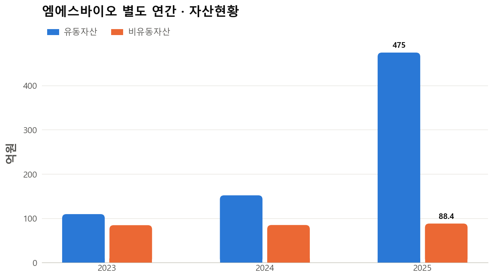
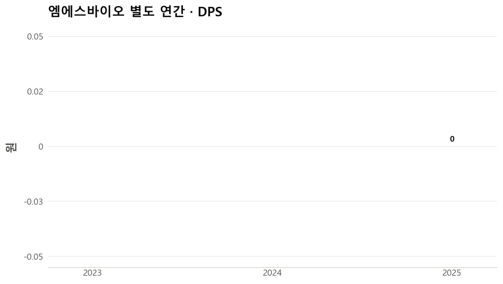
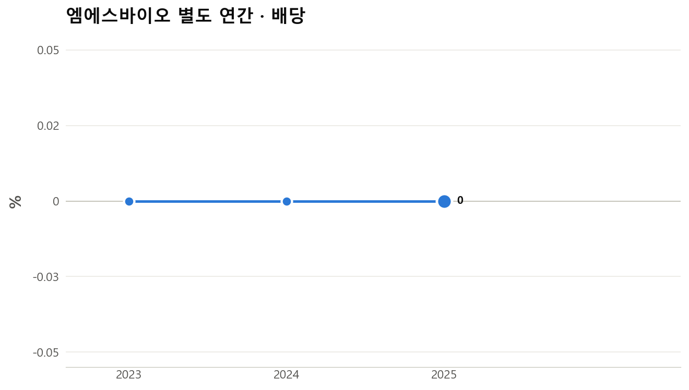
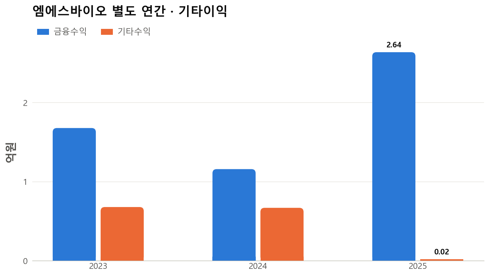
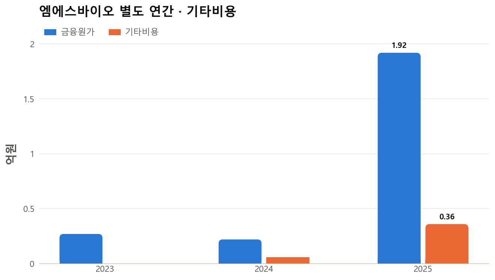
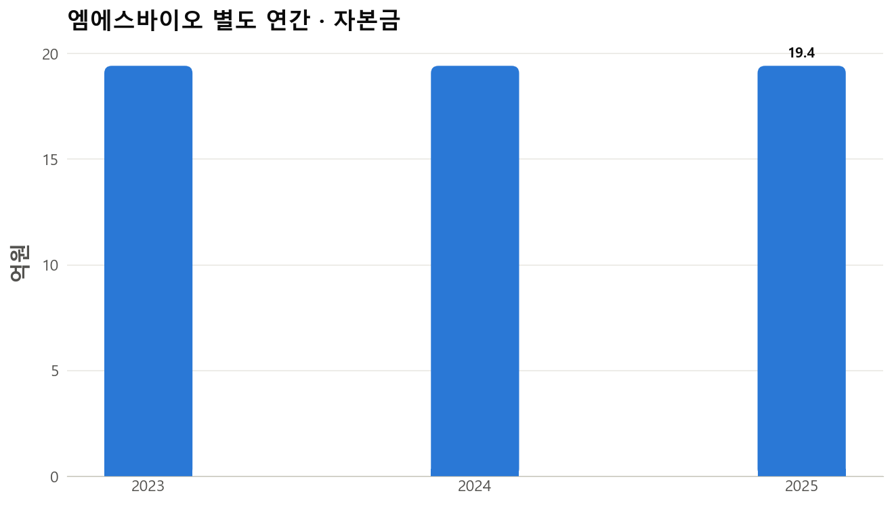
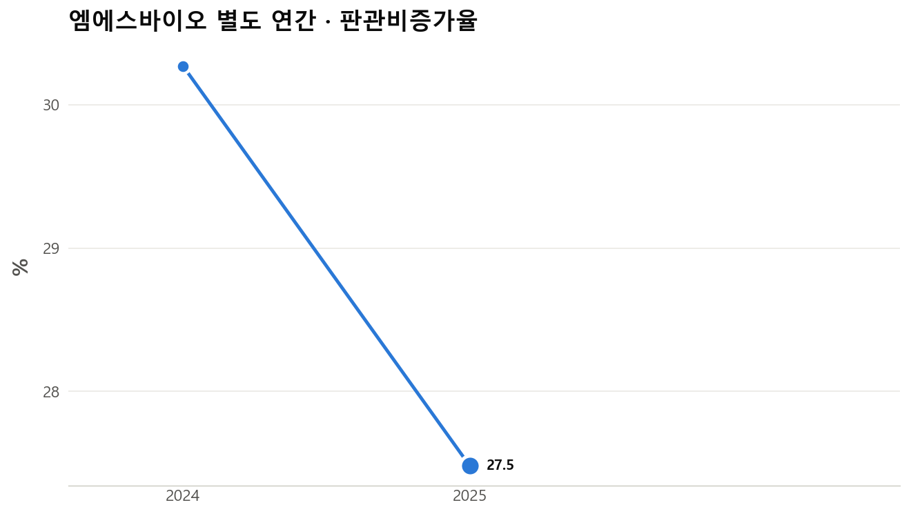
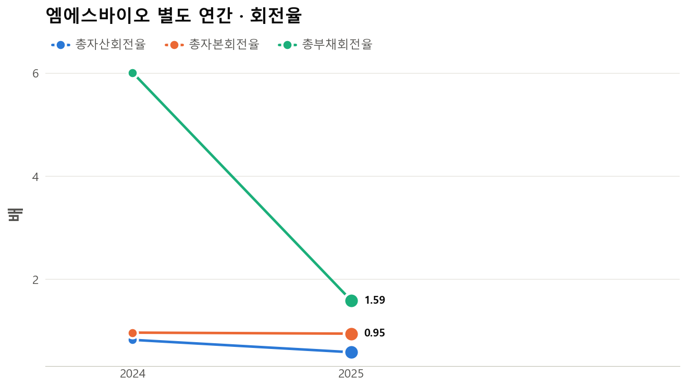
자료
- 재무·그래프: 기존 개별기업 분석 (30개 그래프)
- 네이버 증권 0건(최근 60일) + 구글 뉴스 95건(월별 1년)
- DART 고유번호 없음 · 공시 본문 0건 읽음 (원문 저장소 0건 · 새로 받음 0건)
- 한경컨센서스 리포트 0건 (최근 0건 본문 분석)
- 선진짱 채널 '선진짱 주식공부방': 1년간 언급 7건 중 이 기업이 주제인 리포트성 메시지 0건 (PDF 0건 본문 분석)
- 배당소득 분리과세: 판단 불가
- 인용 검증: 뉴스·공시·리포트·채널 인용 147건을 원문과 대조, 근거 불충분 5건 제거